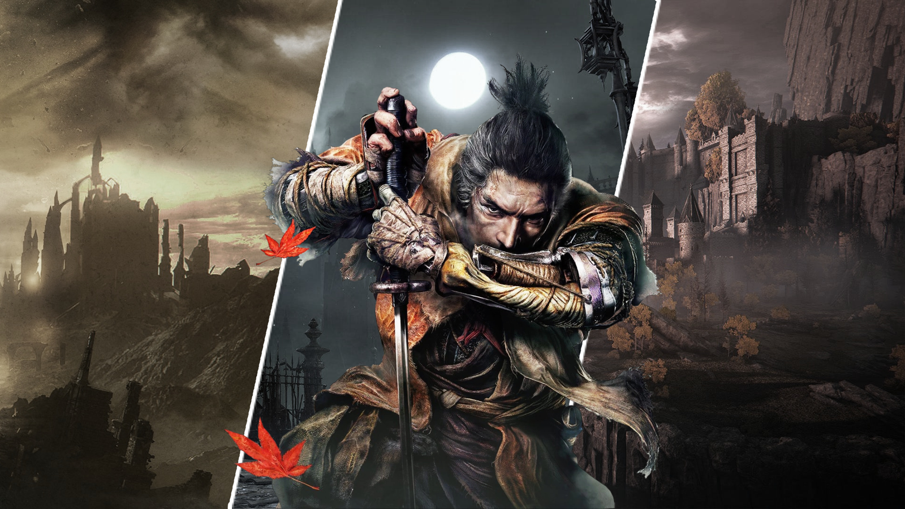

GTA originally realeased in 2013 is one of the biggest and most popular open world games till date. It has a single player story mode and an online mode and is still a very fun game to play till date. (For more information)
Sekiro shadows die twice is a game thats focused mainly on stealth exploration and combat and its commonly known for its extremely challenging gameplay(For more information)

Spiderman is an open world game that focuses on fluid traversal which is extremely fun and really good and dynamic combat its probably one of the most fun games out there. (For more information)